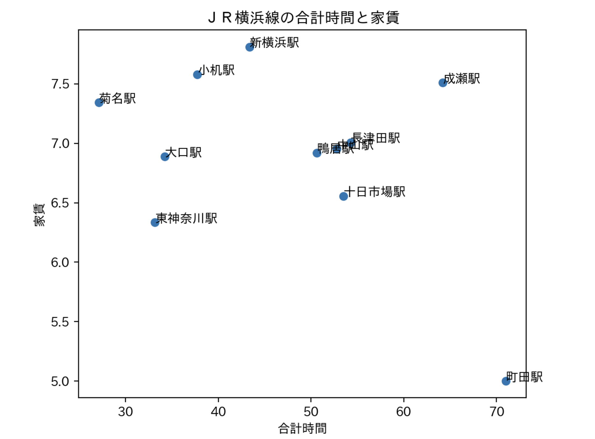
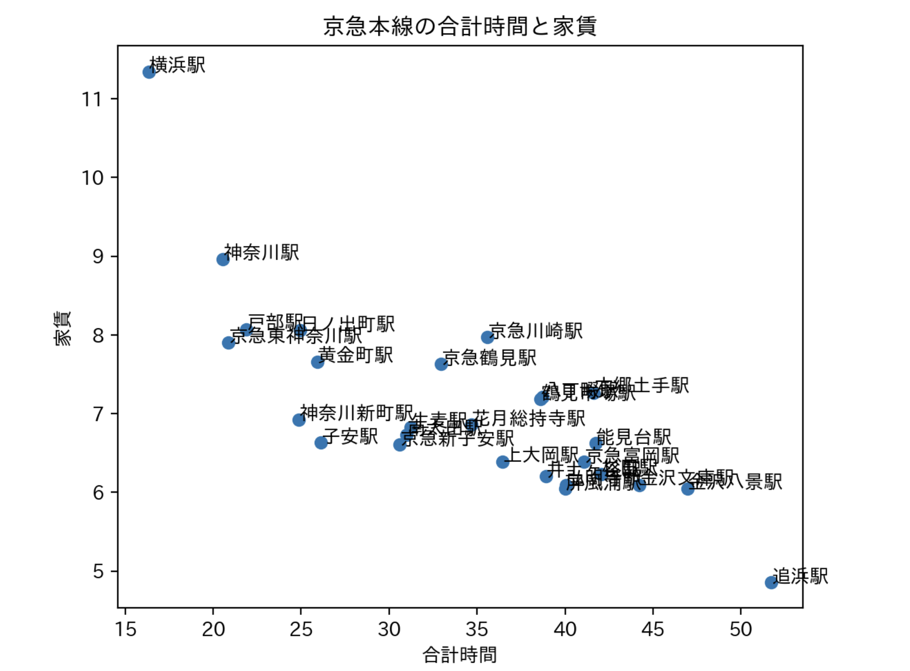
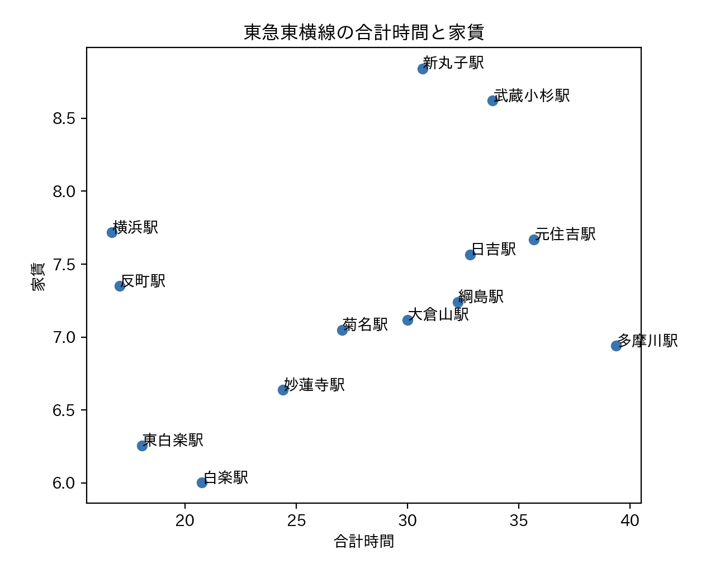

第6回課題
[賃貸情報の分析]
JR横浜線

京浜急行線

東横線

おすすめの駅
このグラフを分析した結果「菊名駅」に決めた。
まず、ターゲットは神奈川大学のみなとみらいキャンパスに通う学生。そして休日はショッピングが好きで渋谷など東京に頻繁に行く人。
菊名駅の魅力は何と言っても「特急」や「通勤特急」、「急行」が停まることだ。
これらの停車駅は「横浜駅」「菊名駅」「武蔵小杉」「自由が丘」「中目黒」「渋谷」だ。
菊名駅なら講義が終わった後に白楽にある横浜キャンパスで部活をしてから帰宅できる。さらに休日には渋谷駅まで20分で行くことが可能だ。